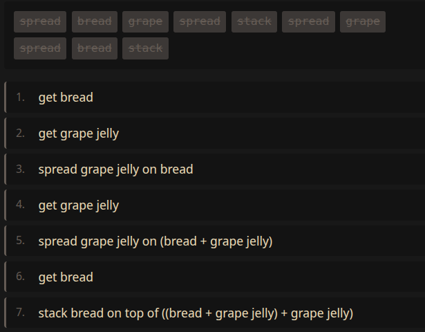

Let’s gooooooo!
Structure is fashionable again. It feels like we’re one good abstraction away from grammars having their moment, and I think that abstraction is finally obvious.
The purpose of this post is to outline a framework to talk about grammar generation, inference, and scoring all at once in a clean interface, with the hope that this explanation will simplify future research efforts on this topic.
Think of a grammar as a strongly-typed object.
For example, this is G:
You can sample from the grammar (assuming uniform distribution over production choices):
p = G.sample() // returns a ParseYou may get a parse that looks a bit like this:
Then, you can render data from the parse:
x = G.render(p) // returns an ObservationRendering drops the latent structure.
Sampling is stochastic. So, you may instead get a parse that looks like this:
Producing parses and rendering observations from those parses is the easy part.
The harder problem is parsing raw observations.
To demonstrate this, let’s change the grammar to be more interesting, one that introduces the concept of running tests in parallel.
Try parsing this observation:
We can call infer to discover which parses can explain
this data:
P = G.infer(obs => obs == x) // returns Dist<Parse> | nullThere are two potential parses for the same sequence.
Candidate 1:
Candidate 2:
That’s why infer(...) returns a probability
distribution.
You can imagine the probability distribution looks somewhat like this:
Abstracted away is the fact that infer is performing a
complicated parsing algorithm. It’s giving you access to the
posterior:
\[ P(p | x) \propto P(x | p) P(p) \]
And lastly, we can compute a score using score:
s = G.score(p, x) // log P(x | p) + log P(p)This interface is sufficient for some really powerful algorithms, as we’ll see below.
G.infer(...) can parse partial data, like a prefix of a
sequence, or the list of moves made so far in a game. In other words, it
describes the next possible moves.
Monte Carlo Tree Search (MCTS), on the other hand, is an algorithm that finds you the approx. best move.
Don’t get stuck on the name, though. Maybe a better name would have been “Statistical Tree Search.” The “Monte Carlo” part is a nod to the city of Monte Carlo in Monaco, which is famous for its casinos. In the literature, “Monte Carlo” is a loaded term that also implies sampling, repeated simulations, balancing exploration vs. exploitation, and a few other relevant ideas, so unfortunately the name’s here to stay.
\[ \underbrace{ \text{Monte Carlo} \qquad \underbrace{ \text{Tree} \qquad \underbrace{\text{Search}}_{\substack{\\[1.0ex]\text{algorithm}}} }_{\substack{\\[1.3ex]\text{uses a tree data structure}}} }_{\substack{\\[1.6ex]\text{named after Monte Carlo sampling}}} \]
In the algorithm, you construct a tree from scratch, where each path from the root represents the sequence of actions you may take.
Example
The algorithm iterates many times. In each iteration, we build up the tree:
So, to get started, we’ll initialize a bare-bones tree.
// start with just the root node
tree = Tree([
Node({
// initial trivial partial parse
parse: p0,
// observation
obs: "",
// frequency of usage (will be updated by `backprop`)
visits: 0,
// mean utility estimate (will be updated by `backprop`)
value: 0.0,
})
])Let’s take everything we’ve learned, using infer,
sample, render, and score to
implement MCTS. The following code will be repeated in a loop many
times:
// === 1. pick a promising starting path ===
// tree selects a path (using UCB and prior)
path = tree.select(node => G.score(node.parse, node.obs))
// the last node is our frontier
node = path.at(-1)
// === 2. roll out fully to see where it could end ===
P = G.infer(obs => obs.startsWith(node.obs))
p = P.sample({ reject: node.children.map(c => c.parse) })
x = G.render(p)
nextMove = x.at(node.obs.length)
child = tree.add(node, Node(p, [...node.obs, nextMove]))
// === 3. Tally up the results ===
u = utility(x)
tree.backprop(path, child, u)I know, I threw in a bunch of undefined things in there, such as
tree.select and tree.backprop, but you can
imagine an API that lets you vibe-mcts. For clarity, I must explain:
tree.select builds a path from the root by repeatedly
choosing a child using a policy known as UCB/PUCT, with
G.score acting as a prior.utility(x) is the value of that state, defined ad-hoc
based on the context.tree.backprop walks back up the path, incrementing
node.visits and updating the running
node.value estimate.But c’mon, isn’t that so cool!? You’re basically 80% there with just this interface!
As mentioned earlier, given a grammar model:
G.infer(...) reveals candidate next movesBut, how do you learn a grammar in the first place?
Similar to the algorithm above, let’s start with a root node. This
time, node.obs will be grammar objects:
// start with just the root node
tree = Tree([
Node({
// initial trivial partial parse
parse: p0,
// observation, trivial grammar object
obs: G0,
// frequency of usage (will be updated by `backprop`)
visits: 0,
// mean utility estimate (will be updated by `backprop`)
value: 0.0,
})
])Define a set of edit actions one can perform on grammars.
Do you see where I’m going with this?
Run the same MCTS algorithm above, but instead of searching through the space of observations constrained by grammar actions, search through the space of grammar objects constrained by grammar-edit actions.
For example, let’s say you’d like to learn how to make a peanut butter and jelly (PB&J) sandwich. Let’s establish some atomic concepts:
breadstrawberry, grape)crunchy, smooth)spread (for spreading things on bread)stack (for stacking slices of bread)The following grammar generates instructions on making PB&J sandwiches:
Sampling from that grammar will produce a sequence of words that maybe at first glance sound like gibberish, but I’ve been careful to ensure it compiles to valid Forth (Moore 1970) code. Hit the “Sample & Run” button to see for yourself!
Searching in grammar space means starting from a trivial grammar, and performing a sequence of edits to discover an optimal grammar. And, it’s harder than it sounds.
Can you edit this grammar below into the one above?
Click the edit operations above to transform the grammar. I gave up after 20 seconds.
The goal of the MCTS algorithm is to find the sequence of actions that will get us there, by mutating the grammar to maximize a pre-defined utility.
In the demo below, click “Start Search” to watch MCTS discover a grammar that matches a set of target sequences:
The search uses MCTS over grammar-edit actions and scores candidates.
After you run the search, pay special attention to the “novel idea” section. It’ll show you an observation that doesn’t exist in the training data. You can hit run to see the idea play out.

The beauty of grammar synthesis is that the learned model’s divergence from the training data is a feature not a bug!
For a deeper dive into this approach, see my dissertation (Shukla 2019).